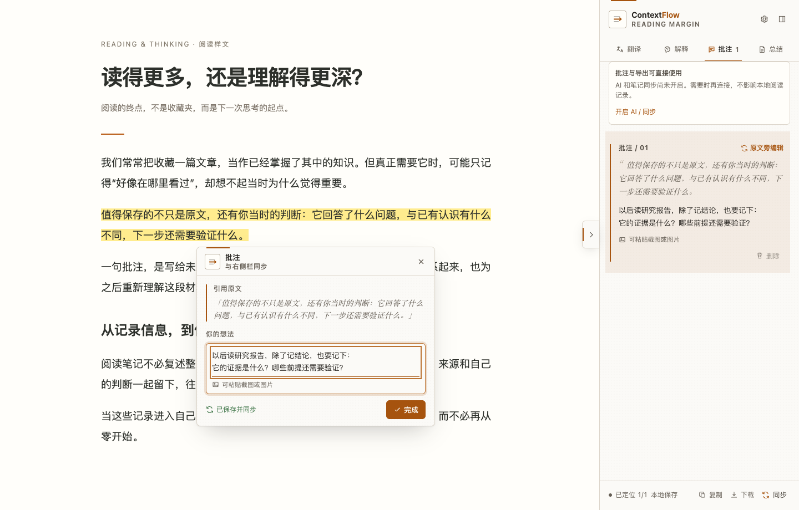

为深度阅读而作
读过的，
成为自己的理解。
在网页原文旁写批注、贴截图、继续追问。
把原文、思考和来源，一起带回自己的笔记。
免费开源 · 无需注册 · 批注与导出无需配置 AI
商店当前 v0.3.2 · 下方展示 1.0 实际界面。1.0 已提交 Chrome 商店审核，尚未上线，通过后自动发布。查看 1.0 发行说明 →

让阅读回到你已经在用的工具里
不止保存文章
留住原文，也留住
它对你意味着什么。
从一句有启发的话，到一份可以继续使用的笔记。
让理解发生在阅读现场，而不是留待“以后整理”。
想法出现在哪里，
就记在哪里。
选中一句原文，直接在旁边写批注、粘贴截图，不必把注意力移到别处。原位面板与侧栏共享同一条记录，随时编辑，集中回看。
重新打开文章，尝试恢复原文标记；点击侧栏记录，回到当时的上下文。
值得保存的不只是原文，还有你当时的判断。
它回答了什么问题？
与我原来的理解有什么不同？
下一步，还需要验证什么？
沿着问题往下读，
也带上已有的积累。
遇到不懂的地方，就地解释、翻译和追问。长文先看速览，再回到值得深入的段落。AI 的回答与你自己的补充，一起留在阅读记录里。
连接本地服务，选择自己的模型；进一步授权笔记目录后，可让本地 agent 参考已有知识。实际回答取决于模型、笔记和授权范围。
配置 AI 与个人上下文“这个结论，与我之前的
理解有什么不同？”
读完之后，
把理解带回自己的笔记。
复制或下载带来源的 Markdown。连接本地服务后，也能同步到 Obsidian、Markdown 目录或思源笔记，同一篇文章持续更新同一份笔记。
浏览器内输入自动保存；写入笔记软件，由你点击「同步」触发。内容可管理、可迁移，也可以继续编辑。
# 一次阅读留下的思考
原文链接：文章的来源地址
## 速览
- 文章要点（主动生成后收录）
## 批注
- > 值得保存的不只是原文……
- 💬 它改变了我对什么的判断？
## 解释
- 问题、回答，以及我自己的补充。
## 翻译
- 原文与翻译结果。
## 总结
- 下次阅读，可以从这里继续。从第一条批注开始
先开始阅读，
不必先配置一切。
高亮、批注、图片补充和 Markdown 导出，
只需安装扩展，无需账号、Node.js 或 API key。
AI 和笔记同步，等需要时再开启。
- 01
从商店安装
点击「添加至 Chrome」，在拼图菜单把 ContextFlow 固定到工具栏。
- 02
刷新文章，写条批注
选中一句正文，点「批注」，在原文旁写下自己的想法。也可以粘贴图片。
- 03
把阅读记录带走
打开右侧阅读记录，点击底部「下载」，得到包含原文、批注和来源的 Markdown。
桌面 Chrome / Chromium 111+ · 当前界面主要为中文
刚安装后，请刷新已经打开的文章。
高亮、批注与 Markdown 导出
安装即用，无需本地服务或 AI 配置。
阅读库、备份与诊断
1.0 新增。跨文章找回与预览，完整 JSON 备份限 32 MB，可确认补充恢复。
同步到自己的笔记
本地服务 + 保存位置；只同步笔记无需配置 AI。
AI 解释、翻译与速览
本地服务 + 自己的 LLM 或 Agent；翻译需配置 LLM。模型费用另计。
你的数据，你的边界
一份能带走的记录，
一套由你决定的工具。
阅读记录保存在扩展私有空间，不需要创建阅读云账号。笔记同步到你选择的位置，不另建一个封闭收藏库。
本地优先不代表 AI 全部离线。使用 AI 时，文章、问题和授权笔记可能发送给你配置的服务。建议定期导出或同步备份。
了解数据处理与隐私需要付费、注册账号，或先配置 AI 吗？
扩展免费开源，无需注册。高亮、原位批注、粘贴图片和 Markdown 导出不要求 Node.js、API key 或本地服务。AI 使用你自己的模型或 agent，相关费用与数据处理由所选服务决定，ContextFlow 不提供内置模型额度。
安装后没有出现工具条，怎么办？
先刷新安装前已打开的文章，确认 ContextFlow 已启用，并允许在当前网站运行。然后拖选一句正文。可以用练习文章完成第一条批注；练习页需要安装扩展，并非免安装演示。只想使用批注时，可暂时关闭连接服务的选项页。
哪些页面可以使用？支持 PDF 和手机吗？
目前支持桌面 Chrome / Chromium 111+ 中的普通 HTTP/HTTPS 网页。Chrome 内部页面、Chrome 商店、内置 PDF 阅读器和本地文件页面暂不支持；论文可优先使用 HTML 正文。手机可浏览本官网与指南，但不作为当前扩展的支持环境。
为什么 AI 和笔记同步需要本地服务？
本地服务负责连接你选择的模型、运行本地 agent，以及写入自己的笔记目录。需要 Node.js 22.13+。下载 companion 服务包，解压后先进入包含 package.json 的目录，再执行连接页提供的完整命令。不要在主目录直接运行 npm ci。macOS 提供常驻服务脚本，其他系统的自动安装尚未完成实机验收。
记录会自动保存吗？卸载后还在吗？
浏览器内输入自动保存，写入笔记软件则需要点击「同步」。卸载扩展会清除扩展内记录，不会删除已导出的 Markdown 或已同步笔记。网页改版可能影响高亮定位，但已有记录仍可导出。请定期导出或同步备份。
官网截图和实际安装界面为什么有差别？
这里使用 v1.0.0 的真实截图，图文为原创样文与示例批注。1.0 包含阅读工作台、跨文章阅读库、备份恢复与脱敏诊断；1.0 已提交 Chrome 商店审核，尚未上线，通过后自动发布。现有商店版本仍可安装。请以扩展详情中的实际版本选择匹配的服务包，不要为了更新卸载扩展。
让下一次理解，不必从零开始